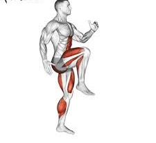

High knees might seem like a simple exercise to perform, but cranking out a few sets of this high energy move gets your heart pumping, activates your lower body and core muscles, and leads to a quick sweat. What’s more, high knees can serve as a warmup, cardio burst between resistance training exercises, or part of a high intensity interval training workout.
HOW TO DO
- Stand tall with your feet about hip-to-shoulder-width apart and your arms at your sides.Looking straight ahead, open your chest, and engage your core muscles.
- Begin by bringing your right knee toward your chest, slightly above waist level. Simultaneously, move your left hand up in a pumping motion.
- Quickly lower your right leg and left hand.
- Repeat with your left leg and right hand. Alternate your right and left leg for the desired time.
TARGET MUSCLES

ADVANTAGES
- Increases heart rate and burns calories High knees are considered a cardiovascular exercise. Within a few seconds of beginning the move, you will notice an increase in your heart rate and breathing. As you continue alternating knees and arms, you’ll also burn calories.
- Targets your lower body High knees activate your quadriceps, hamstrings, calves, glutes, and hip flexors, helping improve muscular endurance, balance, and coordination in these muscles.
- Recruits your core muscles High knees require assistance from your core or abdominal muscles. Not only does this make the move more effective, but activating the core muscles can also help improve posture.
- Increases bone density. Jumping jacks, burpees, and jump squats enhance your bone density. Doing around ten to twenty of these exercises daily can boost your bone strength and density. This also helps you prevent bone-related issues, such as osteoporosis and osteoarthritis.